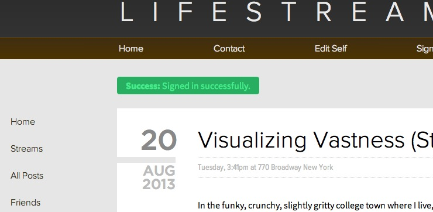

- Lifestream
- Shuffle
- Helproku
- Snake
- Asteroids

This journal app is based on other note-taking applications like Evernote, but implements nested tags (categories) and advanced text editing with Markdown.
Demo Login
- Username: demo
- Password: password
Technologies and Libraries Used
- Ruby on Rails
- Javascript with jQuery, AJAX, and UJS
- HTML 5
- CSS written from scratch
- SQL querying
- APIs: Google Maps with gmaps4rails gem, Markit for stock quotes
- Javascript parsing of custom scripting language to expand snippets like @ STOCK GOOG @ into Google's stock price in real time
- Markdown live preview with Javascript
- Devise for authentication, with Sendgrid for user confirmation, on Heroku
- Paperclip for file uploading with Amazon S3. Drag and drop uploading with jQuery File Upload
- Testing with RSpec, Poltergeist, FactoryGirl, and Capybara with Guard on Spork server
Shuffle is Chatroulette for music. People can share music chosen by other users, and score points based on how popular their picks are. Created collaboratively in 24 hours during Facebook's Summer of Hack.
Technologies and Libraries Used
- Ruby on Rails
- Javascript with AJAX and jQuery UI
- APIs: Echonest for jQuery UI autocomplete, Tomahawk for serving music from Spotify, Soundcloud, etc.
- Facebook login with OAuth and Devise
This Ruby gem helps with the setup of a new Rails repository by automating the creation of a new Github repo, and performs the setup of a Heroku site for you.
Technologies and Libraries Used
- Ruby on Rails: application templates with Thor
- Bundler for gem packaging
The classic game written in Javascript. Use the arrow keys to move, the spacebar to pause, and collect the red apples!
The classic game written with a friend in Javascript and Canvas.
Technologies Used
- Javascript
- HTML
- Canvas
- CSS